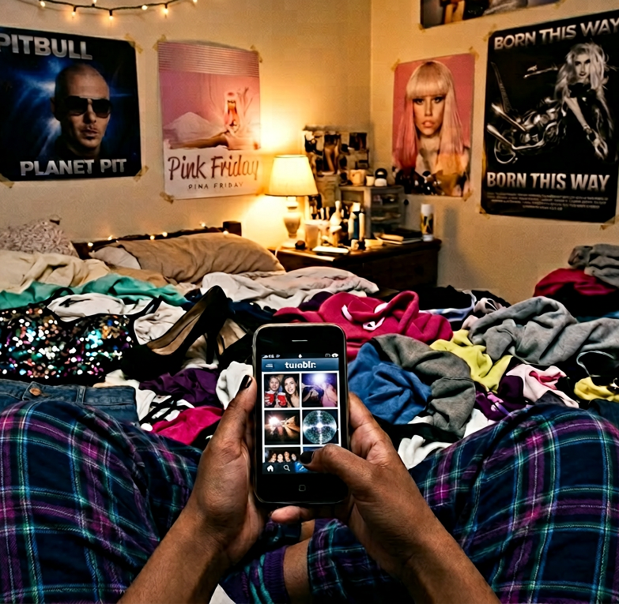
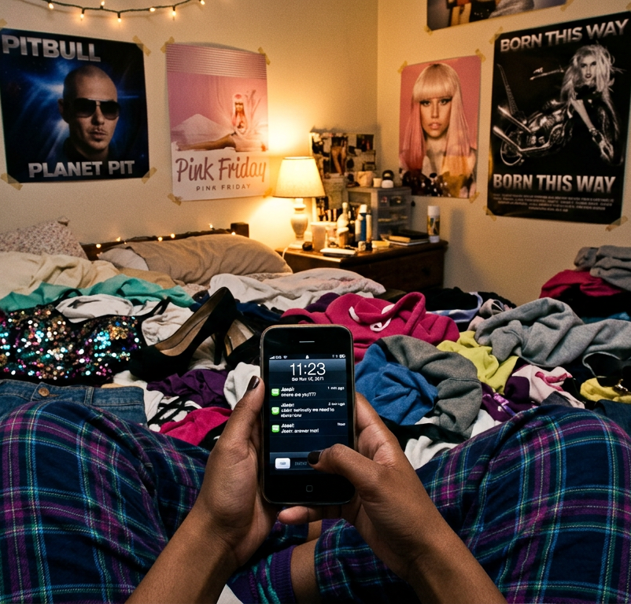
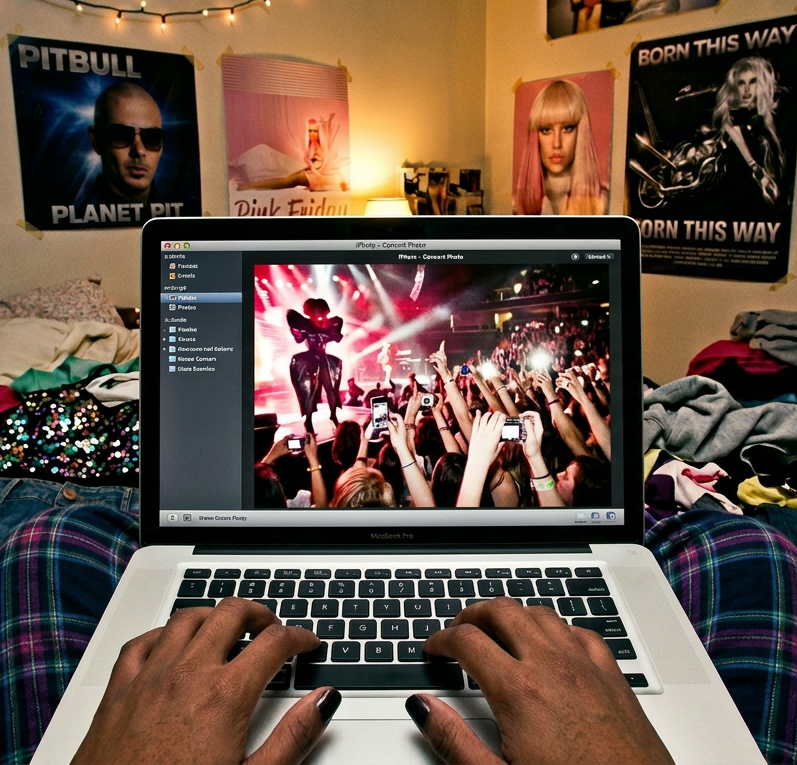
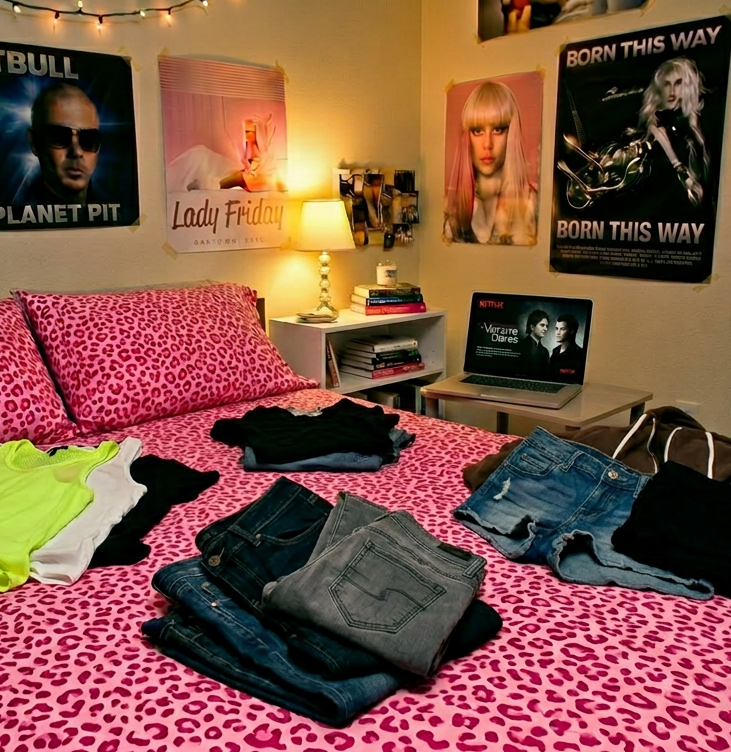
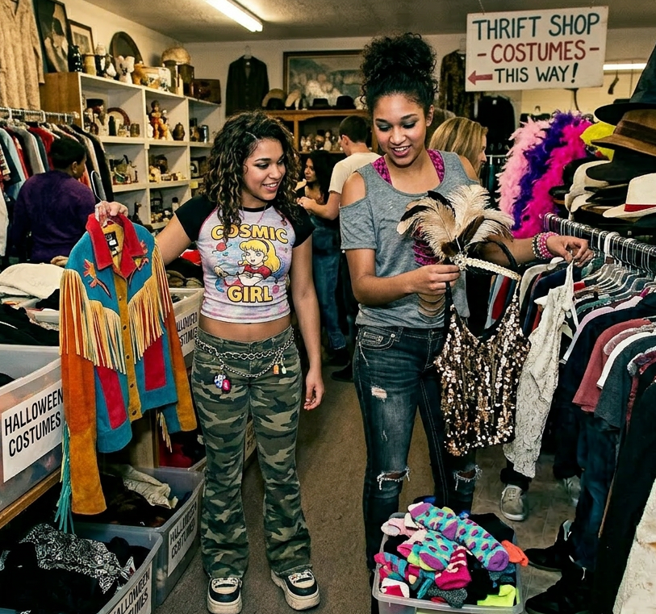
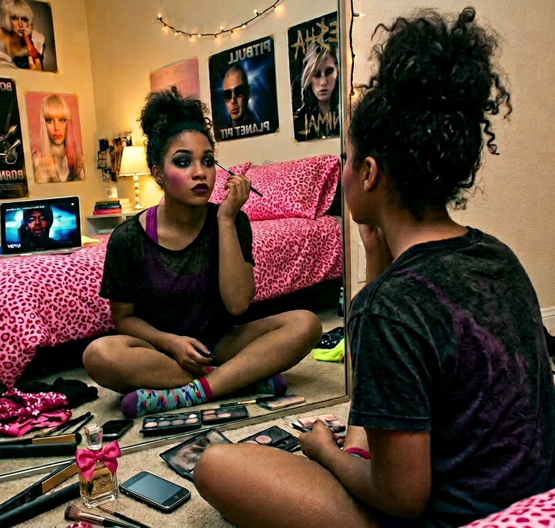
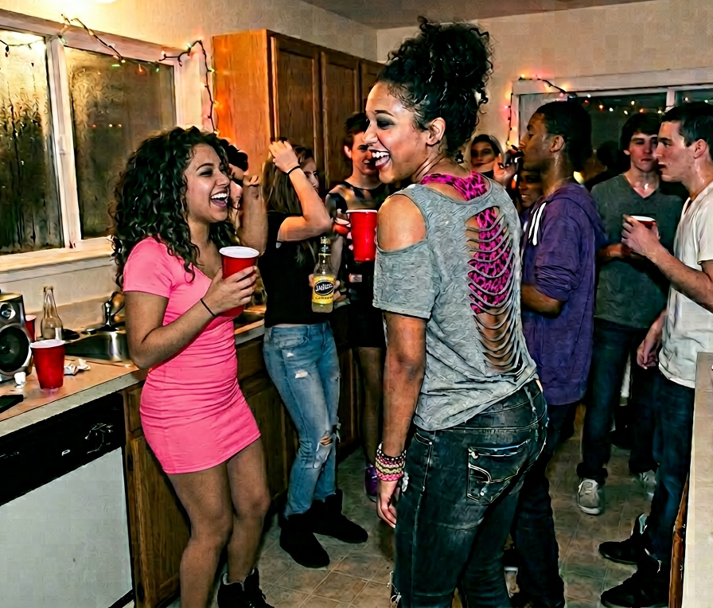
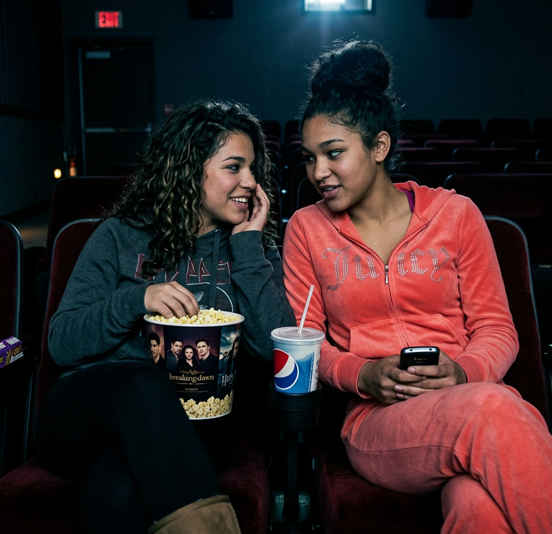

Tuesday morning arrives uninvited. You wake up creased over an unfolded pile of laundry you'll probably never get around to folding. You hear your phone buzzing from somewhere underneath it all. You groan and begin to dig through the heap of clothes- a shirt gives way and your phone slides out, straight through the thin gap between your bed frame and the wall.
What do you do?
You surface from sleep again, not feeling anymore rested than you did when you initially woke up. You finally fish your phone out and are unwelomed with a slew of texts from your best friend Jess, each text more frantic and annoyed than the last. She wanted you to go thrifting with her for Halloween costumes, but that ship has sailed. You quickly respond with an apology, asking if you could hang out later that night instead.
You sigh and open Tumblr to check out your post last night from the Lady Gaga concert. A notification sits at the top: @thecobrasnake reblogged your post: “This Lady makes me go Gaga xD." Your stomach churns as you see the post has nearly 3,000 notes. You start to imagine your future of running a popular Tumblr blog- all the cool party photos and clever captions you'd share.
As you continue scrolling through your feed, you pause on an aesthetic edit of The Vampire Diaries (TVD)- moody lighting, dark forests, and grainy close-ups of characters with poetic quotes. You click the #tvd in the caption to scroll through even more posts- the new season looks so good. You hesitate for a moment, then quickly exit Tumblr before you risk stumbling into spoilers. Season 3 just came out on Netlix, but you haven't gotten around to watching it because you know once you start, you'll have to binge the whole season. But, maybe you'll just watch the first episode while you finally fold your laundry.

Source: AI Generated with Adobe Firefly
What do you do?
You jiggle your arm down the gap trying to feel for your phone before it buzzes again and you realize it's now farther under the bed, out of your reach. You begrudgingly crawl out of bed and lay prone on the ground, stretching your arm out as far as it reaches under your bed. When your fingers close around your phone, you pull back quickly, wiping the dust and crumbs off your arm, suddenly aware how long its been since you've cleaned under there.
Back in bed, you squint at your screen, realizing it's almost noon. You try to piece together the night before, the ringing in your ears from the Lady Gaga concert still lingering. How late did you even get home?
You open Tumblr and a notification sits at the top: @thecobrasnake reblogged your post — “This Lady makes me go Gaga xD." Your stomach churns as you see the post has nearly 3,000 notes. You start to imagine your future of running a popular Tumblr blog and decide you're going to spend the day editing photos for your Tumblr and curating your blog.
A buzz interrupts your thought and you read the message from your best friend Jess, who's panicking because Halloween is almost a week away and she hasn't figured out her costume. She wants you and her to first check out thrift stores for quirky, obscure costumes, and then hit up Spirit Halloween if nothing gives.

Source: AI Generated with Adobe Firefly
What do you do?
To put yourself in the artistic mood, you decide to put some music on. You pick up your Macbook that's neglectfully piled within your clothes and load up iTunes. You click into your recently played, hovering over Lady Gaga. It feels too soon. The ringing in your ears is still there, and pressing play would only remind you that last night is already over.
Your eyes drift through your messy library—untitled tracks, duplicate songs, files you don’t remember downloading. You usually rent CDs from the library to burn into iTunes, but you’ve been lazy lately, so your options feel limited. You end up defaulting, once again, to Nicki Minaj's Pink Friday, the album you’ve played so many times it’s practically background noise.
You navigate to iPhoto, clicking through the photos you took last night. Many photos were naturally overlayed with body glitter than somehow made its way from your skin to your camera lense. The flash has washed out half of them, turned faces into pale smudges and light into something almost unreal. You scroll through anyway, stopping whenever something feels close enough to a memory. The music from iTunes fades into the background as your attention narrows. You find a photo you like- not too blurry, plus, Lady Gaga looks like an alien. You turn up the contrast a few notches and slightly add exposure. Boom. It's Tumblr ready.
You sign into your Tumblr, girlpop2006, why did I ever choose such a childish name? You always think that, but never change it. You upload the picture, with the caption: last night was a movie #MotherMonster #BornThisWay . If you're lucky, it will get a fraction of the notes your last post got.
While scrolling through the #BornThisWay feed, your phone buzzes. It's Jess again, this time it's two links. The first is a Facebook event: EVENT INVITE: PARTY TONIGHT. You don’t recognize the host, but if Jess found it, it’s probably going to be good. 9 PM. BYOB. You swipe back to your messages with Jess to open the second link, which is a link to Paranormal Activity 3, showing tonight at 9. I hate when Jess makes me choose.

Source: AI Generated with Adobe Firefly
What do you do?
You prop up your MacBook on your night stand and go to Netflix, scrolling past Drama without really looking. Lost, Switched at Birth, The Fosters- you scroll fast until you reach The Vampire Diaries. For some reason you never use the search bar; you like the slow hunt and the satisfaction of finding your target.
You sit back on your bed and begin folding. Each piece of clothing feels like a trace of the past few nights you’ve barely recovered from. But hell, it's fall break and you're 18, you can live a little. All of the neon feels a little too bright under the soft light of your room—acid pink tanks, electric blue bandeaus, and sequined tops that catch every flicker of your screen and throw it back at you. The clothes look like they belong in a different version of you, one built entirely out of late nights and flash photography. A tight cheetah print dress slips through your hands, the kind that would’ve fit right into a 2010s basement party—paired with stacked bracelets, smudged eyeliner, and heels you probably shouldn’t have been wearing in the first place. There’s a bedazzled mini skirt next, still glittering faintly even in the dim light, the kind of thing you would’ve seen at a Jersey Shore-era club night or on someone’s Tumblr tagged “going out.”
A mesh top snags on your fingers as you pull it free, the fabric stretched from too many nights of being thrown on too fast, too late. Everything feels loud even when it’s quiet now—animal prints, metallic fabrics, rhinestones that refuse to lose their shine. You keep folding anyway, stacking it all into something smaller, like you can compress the chaos of those nights into neat little piles and convince yourself it all looked more intentional than it really was.
By this point, the first episode is wrapping up and you're into it. You lean forward to play the next episode when your phone buzzes. It's Jess again, this time it's two links. The first is a Facebook event: EVENT INVITE: PARTY TONIGHT. You don’t recognize the host, but if Jess found it, it’s probably going to be good. 9 PM. BYOB. You swipe back to your messages with Jess to open the second link, which is a link to Paranormal Activity 3, showing tonight at 9. I hate when Jess makes me choose.

Source: AI Generated with Adobe Firefly
What do you do?
Jess is gonna pick you up in half an hour. You quickly get up to get dressed. You pull on a pair of dark-wash low-rise skinny jeans, worn in at the knees just enough that the rips don’t look intentional, but they definitely are. You reach for a pink cheetah-print Victoria’s Secret bralette and layer it underneath a thin grey T-shirt, the kind that’s been washed too many times to hold its shape properly. You’ve cut the shoulders out before and torn the back yourself, so it hangs slightly loose now, revealing your back in uneven slashes of fabric. It feels very much like something you didn’t overthink when you first did it, but now it looks exactly like you meant for it to be that way.
You drench yourself in Viva La Juicy , the sweet scent clinging to your skin as you stack bracelets up your arm and slip in your hoop earrings. You catch a glimpse of yourself in the mirror before rushing to the bathroom, quickly brushing your teeth and splashing water over last night’s makeup—smudged eyeliner and leftover glitter that refuses to fully wash away.
Your phone lights up again. Jess is here.
You grab your Juicy Couture Daydreamer bag and head for the front door, hurriedly shimmying into your knee-high black wedge boots on the way—studded with small gems that catch the light as you move.
Jess's black Honda Civic idles in my driveway as she honks the horn a few impatient times. Through the open window, you can hear Gucci Gucci by Kreayshawn blasting from the speakers, the bass slightly distorted but loud enough to feel like it’s vibrating the whole car. You jog over, half-laughing as you slide into the passenger seat.
You immediately pull out your phone and show her your Tumblr post- your “viral” moment, at least in your eyes. Jess leans over, squinting at the screen before grinning and hyping you up like it actually matters more than you’re pretending it does. “Okay wait—this is actually so good,” she says, already backing out of the driveway.
Y'all drive to your favorite thrift store, Thrifty Shopper, and head inside. The second the automatic doors slide open, you’re hit with that familiar mix of musty fabric, cheap perfume, and plastic Halloween masks that have been sitting in storage since 2003. Jess immediately veers toward the costume racks like she has a mission.
Racks of janky Halloween leftovers line the front-witch hats missing their shape, vampire capes with faded red linings, angel wings with bent wire poking through the feathers. There are polyester “sexy” costumes still in their original packaging: sexy cop, sexy pirate, sexy nurse, all wrinkled and slightly tragic under fluorescent lights. Jess is already laughing, holding up a neon green wig that looks like it belongs in Shane Dawson parody.
You both drift deeper into the racks, disappearing into rows of sequins, faux leather, and forgotten party outfits—mixing through discarded club dresses, bedazzled tops, and dresses that look like they’ve survived too many basement parties. Every piece feels like a potential costume if you squint hard enough. A “fairy” becomes something darker with enough eyeliner. A 2008 club dress becomes Snooki with the right heels.

Source: AI Generated with Adobe Firefly
Jess gives you the look, and you nod, leaving the store empty handed.
Spirit Halloween hits you immediately-bright orange signage, fake cobwebs stretched across the windows, and inflatable props twitching slightly in the air conditioning. Inside, it’s chaos in the best way: aisle after aisle of packaged identities, costumes labeled “sexy,” “scary,” or “iconic,” with no real in-between.
You pause near the pop culture section, running your fingers along racks of instantly recognizable outfits—superheroes, movie characters, and whatever version of “club wear” Spirit Halloween has decided is socially acceptable this year. You stop at a rack of Gaga-inspired costumes, plastic versions of her most infamous looks, and let out a small laugh. “Well,” you say, picking one up and turning it over in your hands, “now I have an excuse to be Lady Gaga in her meat dress.”
Jess decides to be Katy Perry in her Last Friday Night music video, and just like that, you both are stars.
As you're leaving Spirit Halloween, Jess suggests you go see Paranormal Activity 3 tonight with her to get in the spooky spirit. The movie's at 9PM. Suddenly, Jess gets a Facebook Notification: EVENT INVITE: PARTY TONIGHT. It starts at 9PM and it's BYOB. She looks as you "you're call," she says, "I could go either way."
What do you do?
"Party it is" you respond to Jess.
With almost two hours to spare before Jess picks you up, you immediately reopen iTunes to play your getting ready music. This time, you don't have time to waste so you play Kid Cudi's newest album, which starts with Mr Rager.
You drop down cross-legged on your floor in front of your full-length mirror. Your room is half-lit from the glow of your lamp and your MacBook screen still open on your bed, but your focus is fully on your reflection now—like you’re getting ready for a version of yourself that only exists after dark.
You wipe off all of the makeup from last night and start piling on foundation and concealer. You overblush your cheeks to the point where people might think you're celebrating Halloween early, but you know that your blush is what always fades first. You spend over half an hour perfecting your smoky eye, sisters not twins, you tell yourself. Mascara goes on in layers, not carefully, just repeatedly.
You carefully draw black eyeliner over your waterline, trying not to poke yourself while simulataneously blinking so your eyes don't water and ruin your eyeliner. You apply Mac's Punk Couture purple matte lipstick, trying to not overline your lips. You finish your lips with Too Faced lip plumping gloss and pucker your lips.
You lean back and study yourself in the mirror for a second. You feel good.

Source: AI Generated with Adobe Firefly
Here comes the hard part- your outfit. You try on about eighteen different things, but nothing feels right. Finally, you decide you're gonna play it easy, and wear a hot pink, cheetah print Victoria's Secret bralette top. Over the top, you wear a thin, T-shirt that you cut the shoulders out of and shredded the back.
Next come your low-rise, dark wash, ripped skinny jeans, sitting just low enough on your hips to feel deliberate. You tug them into place, smoothing them down without really thinking about it.
You hear a honk outside- Jess is here. You quickly rush to drench yourself in Viva La Juicy and shimmy on your Isabel Marant black high-top sneakers. You grab your Juicy Couture brown Daydreamer bag and book it to the door.
When you open the front door, the chilly air hits you and you can hear Gucci Gucci by Kreayshawn blasting from Jess's black Honda Civic.
“Okay, yes,” she says as you get in. “We look insane.”
Twenty minutes later, you pull up to a two story, blue vinyl house. There's multi-color christmas lights streamed around the wrap-around front porch and beach chairs posted up around the front yard. You have to park about a block down.
When you and Jess out of her car, she opens the trunk to shove some Mike's Lemonade and Twisted Teas into your bag. You both shiver as you speed walk to the house.
Party Rock Anthem by LMFAO is blasting so loud that your body vibrates as you walk up the white-painted brick front porch steps. Inside, it's all crowded heat and noise, you and Jess move with the wall into the kitchen. You pull out two Mike's Hard for you and Jess. Leaning back on the counter, you watch a group bet each other on a pull-up contest. Leaning back on the counter, you watch a group bet each other on a pull-up contest, except there’s no actual pull-up bar. Just the thin edge of the doorway, like a quarter-inch lip that looks barely strong enough to hold a hanger, let alone a person. Someone drags a chair over under the doorway like that’s somehow going to help, while another guy jumps up, grabs the frame, and barely manages half a pull-up before dropping back down to a chorus of yelling.
Jess looks at you, smiling and shoves herself through the crowd surrounding the doorway. She kicks off her heels and springs up onto the frame, only to flip herself upside down and hold on to the frame with her toes- hanging. You immediately pull your phone out to document her party trick- you'd never seen Jess do anything like this. Your camera is slightly shaky from laughing too hard, but you manage to catch it anyway.
A beat of silence hits the hallway, everyone's waiting for her to fall and hit her head on the hardwood floor. But she manages a good fifteen seconds before reaching her arms to the ground and kicking herself over, only to pop up, standing tall with her arms exteneded like the gymnast she is. Jess is met with the kind of applause that only Lady Gaga only sings about.

Source: AI Generated with Adobe Firefly
Two more Mike's Hard and a Twisted later, you and Jess are knee and elbow deep into a Twister game. Get Em Up by Mac Miller plays, vibrating through the floorboards as someone cranks the volume from the living room speaker.
The mat is half on the carpet, half sliding across the hardwood, already slightly wrinkled from people stepping on it and tripping over it earlier in the night. “Left hand green,” someone calls out. “Impossible,” you mutter, stretching awkwardly across her to reach your spot, trying not to collapse directly onto her. Jess tries to shift and immediately loses it, slipping just enough that she grabs your arm on instinct, dragging you down with her.
Many games later, you and Jess are slumped over a couch together, you both know it's time to call it a night. The music is still going, but the energy isn't reaching you anymore. A couple people pass by, still hyped, still chasing the next thing, but neither of you move to follow. Your shoes feel too heavy, your limbs too warm, the night suddenly quieter even though nothing actually changed.
Jess takes you home, both of you are silent on the drive home. When she drops you off, you wave goodnight to her. She waits until you're in your house before backing out of the driveway. You drop your purse and kick your shoes off. Straight to bed you go, not bothering to change or wash your face. The reminants of tonight will leak into tomorrow.
"Party" you say to Jess with a smile.
"Figured," she responds.
You drive back to your house to get ready. On the way home, you listen to Katy Perry and Nikki Minaj.
When you get home, Jess b-lines to your closet. You're a bit taller than her, so she searches for the shortest dress.
You drop down cross-legged on your floor in front of your full-length mirror. Your room is half-lit from the glow of your lamp and your MacBook screen still open on your bed, but your focus is fully on your reflection now—like you’re getting ready for a version of yourself that only exists after dark.
You wipe off all of the makeup from last night and start piling on foundation and concealer. You overblush your cheeks to the point where people might think you're celebrating Halloween early, but you know that your blush is what always fades first. You spend over half an hour perfecting your smoky eye, sisters not twins, you tell yourself. Mascara goes on in layers, not carefully, just repeatedly.
You carefully draw black eyeliner over your waterline, trying not to poke yourself while simulataneously blinking so your eyes don't water and ruin your eyeliner. You apply Mac's Punk Couture purple matte lipstick, trying to not overline your lips. You finish your lips with Too Faced lip plumping gloss and pucker your lips.
Source: AI Generated with Adobe Firefly
After you and Jess get ready, you watch some Smosh on YouTube to kill time before it's time to go.
When it's almost 9, you both drench yourselves in Viva La Juicy and head out.
In the car, Jess blasts Superbass by Nikki Minaj.
Twenty minutes later, you pull up to a two story, blue vinyl house. There's multi-color christmas lights streamed around the wrap-around front porch and beach chairs posted up around the front yard. You have to park about a block down.
When you and Jess out of her car, she opens the trunk to shove some Mike's Lemonade and Twisted Teas into your bag. You both shiver as you speed walk to the house.
Party Rock Anthem by LMFAO is blasting so loud that your body vibrates as you walk up the white-painted brick front porch steps. Inside, it's all crowded heat and noise, you and Jess move with the wall into the kitchen. You pull out two Mike's Hard for you and Jess. Leaning back on the counter, you watch a group bet each other on a pull-up contest. Leaning back on the counter, you watch a group bet each other on a pull-up contest, except there’s no actual pull-up bar. Just the thin edge of the doorway, like a quarter-inch lip that looks barely strong enough to hold a hanger, let alone a person. Someone drags a chair over under the doorway like that’s somehow going to help, while another guy jumps up, grabs the frame, and barely manages half a pull-up before dropping back down to a chorus of yelling.
Jess looks at you, smiling and shoves herself through the crowd surrounding the doorway. She kicks off her heels and springs up onto the frame, only to flip herself upside down and hold on to the frame with her toes- hanging. You immediately pull your phone out to document her party trick- you'd never seen Jess do anything like this. Your camera is slightly shaky from laughing too hard, but you manage to catch it anyway.
A beat of silence hits the hallway, everyone's waiting for her to fall and hit her head on the hardwood floor. But she manages a good fifteen seconds before reaching her arms to the ground and kicking herself over, only to pop up, standing tall with her arms exteneded like the gymnast she is. Jess is met with the kind of applause that only Lady Gaga only sings about.
Source: AI Generated with Adobe Firefly
Two more Mike's Hard and a Twisted later, you and Jess are knee and elbow deep into a Twister game. Get Em Up by Mac Miller plays, vibrating through the floorboards as someone cranks the volume from the living room speaker.
The mat is half on the carpet, half sliding across the hardwood, already slightly wrinkled from people stepping on it and tripping over it earlier in the night. “Left hand green,” someone calls out. “Impossible,” you mutter, stretching awkwardly across her to reach your spot, trying not to collapse directly onto her. Jess tries to shift and immediately loses it, slipping just enough that she grabs your arm on instinct, dragging you down with her.
Many games later, you and Jess are slumped over a couch together, you both know it's time to call it a night. The music is still going, but the energy isn't reaching you anymore. A couple people pass by, still hyped, still chasing the next thing, but neither of you move to follow. Your shoes feel too heavy, your limbs too warm, the night suddenly quieter even though nothing actually changed.
Jess takes you home, both of you are silent on the drive home. When she drops you off, you wave goodnight to her. She waits until you're in your house before backing out of the driveway. You drop your purse and kick your shoes off. Straight to bed you go, not bothering to change or wash your face. The reminants of tonight will leak into tomorrow.
“Movie,” you respond to Jess. The decision feels easier than the party ever did—quieter, softer, like something you can actually settle into.
You change into a comfy but still cute coral Juicy Couture tracksuit, the velour soft against your skin. In the bathroom, you wash off the remnants of the night—smudged eyeliner dissolving under warm water, glitter stubbornly clinging to your cheeks no matter how much you try to rinse it away.
When you’re done, you feel a little more like yourself again—less flash, less noise, more stillness.
You lay on your bed and pull up YouTube on your MacBook. Your top recommended being Jenna Marbles, Michelle Phan, and ShaneDawsonTV. You scroll through and watch a few videos to kill time before Jess picks you up.
Half way through a Jenna Marbles video, you hear your Jess's horn in the driveway and two flashes of her brights shine through your window. You hurry out of the house and pop into her car.
Jess is giggling, waiting for you to question why she's playing horror music. You laugh at her and go to turn down the music when she grabs your hand, "No! I'm serious! We have to get into the spooky mood for the movie!" she says. We drive fifteen minutes to the theater, Jess scolding you because everytime a high-pitch note plays in the music you laugh.
As soon as you step into the lobby, Jess is still buzzing with that chaotic spooky‑energy, practically bouncing on her toes while you’re trying to act normal. After you grab your tickets, Jess drags you to concessions to get popcorn and candy.
You watch the purple and blue geometric pattern pass below your feet as you step past the dim hallway lighting into Theater 7. You and Jess move to sit in the center of the theater. The seats creak softly as you settle in. Jess immediately tucks her legs up again, knees to her chest, like the floor is a portal to the underworld. She sets her Sour Patch Kids between you, but her hand keeps drifting back to them every few seconds like she’s stress‑snacking on autopilot.
Jess leans toward you, whispering, “Okay, but if something shows up behind us, we’re the first ones gone.”
“Jess, it’s a movie,” you whisper back.
“Yeah, but we’re in the back row. That’s where the ghosts hang out.”
You laugh under your breath, and she elbows you, but she’s smiling too. The lights dim again, this time for real. The chatter fades. The room settles into that collective inhale right before a horror movie begins.
The Paramount logo appears, washed in that eerie blue glow. Jess’s hand finds your sleeve instantly. The VHS static flickers. A date stamp appears on the screen—1988. Jess whispers, “Nope,” under her breath and shoves another handful of Sour Patch Kids into her mouth.

Source: AI Generated with Adobe Firefly
The first loud bang hits. The entire theater jumps. Jess jumps the highest, nearly launching the popcorn into the row in front of you.
“Jess,” you whisper, trying not to laugh, “that was literally just a door closing.”
“A DEMON door,” she hisses back, eyes wide.
As the movie builds—slow pans, creaking floors, shadows that shouldn’t move—Jess cycles through every stage of horror‑movie coping: clutching your arm, hiding behind her sleeve, whispering commentary that’s supposed to calm her down but only makes her more scared.
Then comes the scene. The one everyone in 2011 talked about. The one with the sheet. The one that makes the entire theater gasp in unison.
Jess doesn’t gasp. She SCREAMS. A full, startled, involuntary scream that echoes off the back wall. Half the theater turns around. Jess slaps a hand over her mouth, mortified.
You’re shaking with silent laughter, tears in your eyes. She glares at you, whisper‑yelling, “I told you to scream WITH me!”
But even as she hides behind her hoodie, she’s smiling—because it’s fun, because it’s ridiculous, because it’s exactly the kind of night the two of you needed.
And from your perfect vantage point in the back row, the rest of Paranormal Activity 3 unfolds in a blur of jump scares, nervous laughter, and Jess clutching your arm like it’s a lifeline.
By the time the final act of Paranormal Activity 3 hits, Jess is a wreck in the best, most dramatic way possible. She’s half‑hidden behind her hoodie, knees tucked up, clutching your sleeve like it’s a lifeline. Every time the camera pans too slowly, she whispers, “No no no no no,” under her breath like she’s trying to negotiate with the movie.
And then the ending happens—that ending, the one everyone in 2011 warned their friends about. The screen goes chaotic, the sound spikes, the shadows move in ways they absolutely should not, and Jess lets out one last involuntary scream that echoes off the back wall.
When the screen finally cuts to black, the whole theater exhales at once. A few people laugh nervously. Someone mutters, “Bro, what was that.” Jess is frozen, eyes wide, Sour Patch Kid halfway to her mouth like she forgot what she was doing.
The lights come up. Jess blinks, then immediately straightens her hoodie like she’s trying to reassemble her dignity. “Okay,” she says, voice shaky but determined, “that wasn’t even that scary.”
You stare at her. “Jess, you screamed so loud the row in front of us ducked.”
“That was a reflex,” she insists, marching toward the exit with the confidence of someone who absolutely did not just hide behind her sleeve for half the movie. “My body was just… participating.”
The hallway feels brighter than it should after all that darkness. Jess keeps glancing over her shoulder like the demon from the movie might’ve bought a ticket too. When the automatic doors slide open to the parking lot, she jumps a little at the whoosh of air.
“I’m fine,” she says immediately, even though you didn’t ask. “Totally fine.”
The night air is cool, the parking lot mostly empty except for a few groups loudly rehashing the ending. Jess walks a little closer to you than usual, pretending it’s because she’s cold.
“If something grabs my ankle under the car,” she mutters, “I’m never watching a movie again.”
“Jess, nothing is going to grab your ankle.”
“You don’t know that,” she says, unlocking the car with a shaky beep. “You absolutely do not know that.”
She climbs in quickly, slams the door, and locks it with the urgency of someone who is definitely not scared. You slide into the passenger seat, and she immediately starts the engine, blasting the radio like noise alone can chase away the lingering creepiness.
As she pulls out of the parking lot, she finally exhales. “Okay,” she admits quietly, “maybe it was a little scary.”
You smile. “Just a little.”
She nudges your shoulder, still jittery but grinning. “Next time, we’re watching a comedy.”
On the drive home, Jess must have took pity on you because she played Mac Miller and Ke$ha, singing the whole way home.
“Movie,” you respond to Jess. The decision feels easier than the party ever did. She nods in agreement.
Jess drives back to your house.
Once you two both get home, you change into a comfy but still cute coral Juicy Couture tracksuit, the velour soft against your skin. In the bathroom, you wash off the remnants of the night—smudged eyeliner dissolving under warm water, glitter stubbornly clinging to your cheeks no matter how much you try to rinse it away.
When you’re done, you feel a little more like yourself again—less flash, less noise, more stillness.
You lay on your bed and pull up YouTube on your MacBook. Your top recommended being Jenna Marbles, Michelle Phan, and ShaneDawsonTV. You scroll through and watch a few videos to kill time before you both leave.
At about 8:30, you and Jess decide to head out. Once you get in her car, Jess turns it on and eerie music starts playing.
Jess is giggling, waiting for you to question why she's playing horror music. You laugh at her and go to turn down the music when she grabs your hand, "No! I'm serious! We have to get into the spooky mood for the movie!" she says. We drive fifteen minutes to the theater, Jess scolding you because everytime a high-pitch note plays in the music you laugh.
As soon as you step into the lobby, Jess is still buzzing with that chaotic spooky‑energy, practically bouncing on her toes while you’re trying to act normal. After you grab your tickets, Jess drags you to concessions to get popcorn and candy.
You watch the purple and blue geometric pattern pass below your feet as you step past the dim hallway lighting into Theater 7. You and Jess move to sit in the center of the theater. The seats creak softly as you settle in. Jess immediately tucks her legs up again, knees to her chest, like the floor is a portal to the underworld. She sets her Sour Patch Kids between you, but her hand keeps drifting back to them every few seconds like she’s stress‑snacking on autopilot.
Jess leans toward you, whispering, “Okay, but if something shows up behind us, we’re the first ones gone.”
“Jess, it’s a movie,” you whisper back.
“Yeah, but we’re in the back row. That’s where the ghosts hang out.”
You laugh under your breath, and she elbows you, but she’s smiling too. The lights dim again, this time for real. The chatter fades. The room settles into that collective inhale right before a horror movie begins.
The Paramount logo appears, washed in that eerie blue glow. Jess’s hand finds your sleeve instantly. The VHS static flickers. A date stamp appears on the screen—1988. Jess whispers, “Nope,” under her breath and shoves another handful of Sour Patch Kids into her mouth.
Source: AI Generated with Adobe Firefly
The first loud bang hits. The entire theater jumps. Jess jumps the highest, nearly launching the popcorn into the row in front of you.
“Jess,” you whisper, trying not to laugh, “that was literally just a door closing.”
“A DEMON door,” she hisses back, eyes wide.
As the movie builds—slow pans, creaking floors, shadows that shouldn’t move—Jess cycles through every stage of horror‑movie coping: clutching your arm, hiding behind her sleeve, whispering commentary that’s supposed to calm her down but only makes her more scared.
Then comes the scene. The one everyone in 2011 talked about. The one with the sheet. The one that makes the entire theater gasp in unison.
Jess doesn’t gasp. She SCREAMS. A full, startled, involuntary scream that echoes off the back wall. Half the theater turns around. Jess slaps a hand over her mouth, mortified.
You’re shaking with silent laughter, tears in your eyes. She glares at you, whisper‑yelling, “I told you to scream WITH me!”
But even as she hides behind her hoodie, she’s smiling—because it’s fun, because it’s ridiculous, because it’s exactly the kind of night the two of you needed.
And from your perfect vantage point in the back row, the rest of Paranormal Activity 3 unfolds in a blur of jump scares, nervous laughter, and Jess clutching your arm like it’s a lifeline.
By the time the final act of Paranormal Activity 3 hits, Jess is a wreck in the best, most dramatic way possible. She’s half‑hidden behind her hoodie, knees tucked up, clutching your sleeve like it’s a lifeline. Every time the camera pans too slowly, she whispers, “No no no no no,” under her breath like she’s trying to negotiate with the movie.
And then the ending happens—that ending, the one everyone in 2011 warned their friends about. The screen goes chaotic, the sound spikes, the shadows move in ways they absolutely should not, and Jess lets out one last involuntary scream that echoes off the back wall.
When the screen finally cuts to black, the whole theater exhales at once. A few people laugh nervously. Someone mutters, “Bro, what was that.” Jess is frozen, eyes wide, Sour Patch Kid halfway to her mouth like she forgot what she was doing.
The lights come up. Jess blinks, then immediately straightens her hoodie like she’s trying to reassemble her dignity. “Okay,” she says, voice shaky but determined, “that wasn’t even that scary.”
You stare at her. “Jess, you screamed so loud the row in front of us ducked.”
“That was a reflex,” she insists, marching toward the exit with the confidence of someone who absolutely did not just hide behind her sleeve for half the movie. “My body was just… participating.”
The hallway feels brighter than it should after all that darkness. Jess keeps glancing over her shoulder like the demon from the movie might’ve bought a ticket too. When the automatic doors slide open to the parking lot, she jumps a little at the whoosh of air.
“I’m fine,” she says immediately, even though you didn’t ask. “Totally fine.”
The night air is cool, the parking lot mostly empty except for a few groups loudly rehashing the ending. Jess walks a little closer to you than usual, pretending it’s because she’s cold.
“If something grabs my ankle under the car,” she mutters, “I’m never watching a movie again.”
“Jess, nothing is going to grab your ankle.”
“You don’t know that,” she says, unlocking the car with a shaky beep. “You absolutely do not know that.”
She climbs in quickly, slams the door, and locks it with the urgency of someone who is definitely not scared. You slide into the passenger seat, and she immediately starts the engine, blasting the radio like noise alone can chase away the lingering creepiness.
As she pulls out of the parking lot, she finally exhales. “Okay,” she admits quietly, “maybe it was a little scary.”
You smile. “Just a little.”
She nudges your shoulder, still jittery but grinning. “Next time, we’re watching a comedy.”
On the drive home, Jess must have took pity on you because she played Mac Miller and Ke$ha, singing the whole way home.